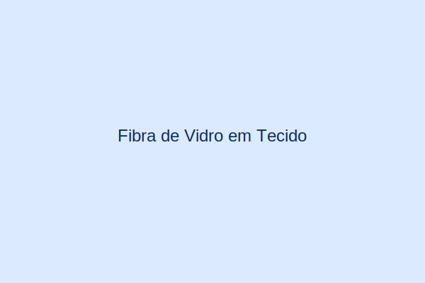

Fibra de Vidro em Tecido
Tecido de fibra de vidro de alta qualidade, disponível em diferentes gramaturas e padrões de tecelagem. Perfeito para reforço estrutural em compósitos, reparos e fabricação de peças de grande porte.
Aplicações
- Indústria
- Construção Civil
- Naval
- Automotivo
Especificações Técnicas
- Gramaturas: 200g/m², 300g/m², 450g/m²
- Padrões: Plain, Twill, Satin
- Largura: 1m e 1,27m
- Embalagem: Rolos de 50m
Por que escolher a Fyber Polímeros?
- Mais de uma década de experiência no mercado
- Qualidade certificada e produtos de alto desempenho
- Atendimento especializado e suporte técnico
- Entrega pontual em todo Norte e Nordeste
- Relacionamento próximo e personalizado
- Portfólio completo de produtos para fiberglass